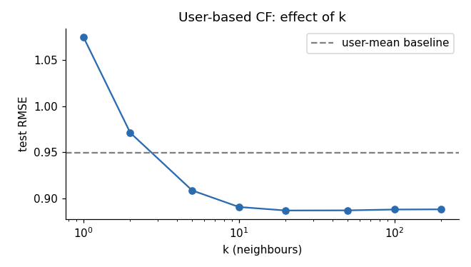

ACM Workshop · Recommender Systems · Day 1 · 11:45–12:45
User-based and item-based CF from scratch: neighbours → predictions → Top-N
Lab2_Collaborative_Filtering.ipynb · needs data/processed/train.csv from Lab 1toy = pd.DataFrame({"LOTR":[5,5,1],"Matrix":[5,4,1],"Titanic":[1,1,5]}, index=list("ABC"))
cosine_similarity(toy)cosine (raw ratings)
A B C
A 1.000 0.994 0.404
B 0.994 1.000 0.416
C 0.404 0.416 1.000By hand (A,B):
$\cos=\dfrac{5\cdot5+5\cdot4+1\cdot1}{\sqrt{51}\sqrt{42}}\approx 0.994$
centred = toy.sub(toy.mean(axis=1), axis=0)
cosine_similarity(centred)centred ratings cosine on centred
LOTR Matrix Titanic A B C
A 1.33 1.33 -2.67 A 1.000 0.971 -1.000
B 1.67 0.67 -2.33 B 0.971 1.000 -0.971
C -1.33 -1.33 2.67 C -1.000 -0.971 1.000This is (almost) the Pearson correlation.
“above my average” → positive
“below my average” → negative
→ removes user bias (Lab 1 §5b)
R = np.full((n_users, n_items), np.nan) # NaN = unknown
R[train.userId.map(u_idx), train.movieId.map(i_idx)] = train.rating.values
M = ~np.isnan(R) # mask of known cells
mu_u = np.nanmean(R, axis=1) # each user's mean
Rc = np.where(M, R - mu_u[:, None], 0.0) # centred, unknown → 0R: (610, 9724) | known cells: 80,668 | sparsity 98.64%Unknown → 0 after centring means “no opinion” (it is the user’s average) — not “hated it”.
S_uu = build_S_uu() # centred-cosine similarity, 610 × 610
s = S_uu[u_idx[10]]; nn = np.argsort(-s)[:10]neighbour similarity # movies in common # ratings
173 0.109 2 21
399 0.094 10 30
443 0.085 7 30
159 0.084 19 70
59 0.084 3 90
192 0.082 2 14User 10: 102 training ratings, mean 3.16
Favourites (5★):
The Intern (2015)
Skyfall (2012)
The Dark Knight Rises (2012)
The Notebook (2004)
Troy (2004)
First Daughter (2004)
Despicable Me (2010)
The King's Speech (2010)Habit: always look at a real user’s history before trusting a metric.
def predict_ui(s, j, k=20):
r = raters[j] # users who rated movie j
sr = s[r]
if len(r) > k: top = np.argpartition(-sr, k-1)[:k]; r, sr = r[top], sr[top] # k most similar raters
pos = sr > 0; r, sr = r[pos], sr[pos] # positive similarity only
return (sr @ Rc[r, j]) / np.abs(sr).sum(), len(r) # weighted avg of centred ratingsNk(u,i) = the k most similar users who rated i. Then: rank unrated movies by prediction, drop the unreliable ones.
recommend_user_cf(10, k=20) title pred #neighbours #ratings
For a Few Dollars More (1965) 4.40 5 23
Thank You for Smoking (2006) 4.24 3 28
Dog Day Afternoon (1975) 4.10 7 27
Fantasia (1940) 4.09 10 39
Dr. Horrible's Sing-Along Blog (2008) 4.08 6 20For a Few Dollars More 4.40 (5 nb)
Thank You for Smoking 4.24 (3 nb)
Dog Day Afternoon 4.10 (7 nb)The Jungle Book (2016) 5.0 (1 nb, 10 ratings)
Submarine (2010) 5.0 (1 nb, 3 ratings)
Bossa Nova (2000) 5.0 (1 nb, 1 rating)
Call Me by Your Name (2017) 5.0 (1 nb, 4 ratings)--- k = 2 --- pred # used
The Jungle Book (1967) 4.77 2
The Hobbit: An Unexpected Journey (2012) 4.73 2
Monty Python's Life of Brian (1979) 4.71 2
--- k = 20 ---
For a Few Dollars More (1965) 4.40 5
Thank You for Smoking (2006) 4.24 3
--- k = 50 --- (identical to k = 20 !)Each candidate was rated by only 3–10 positively-similar users. If fewer than k neighbours rated a movie, a larger k changes nothing → sparsity, not k, limits the neighbourhood.
S_item = (Xi.T @ Xi) / outer(nrm, nrm) # adjusted cosine
similar_movies(1) # Toy StoryToy Story 2 (1999) 0.308
Aladdin (1992) 0.298
Toy Story 3 (2010) 0.282
Finding Nemo (2003) 0.277
Wallace & Gromit: Wrong Trousers 0.247
The Incredibles (2004) 0.243The Matrix (1999) →
Fight Club (1999) 0.360
Pulp Fiction (1994) 0.314
Memento (2000) 0.313
Star Wars V (1980) 0.298
Gattaca (1997) 0.285recommend_item_cf(10)Father of the Bride Part II (1995) 3.77 (11 similar movies used)
Ace Ventura: When Nature Calls (1995) 3.73 (16)
Bend It Like Beckham (2002) 3.71 (20)
Charlie's Angels (2000) 3.68 (20)
Ice Age (2002) 3.68 (20) RMSE MAE coverage
baseline: global mean 1.0488 0.8316 100%
baseline: user mean 0.9497 0.7386 100%
baseline: item mean 0.9827 0.7604 100%
user-based CF (k=20) 0.8871 0.6706 95%
user-based CF (k=50) 0.8873 0.6711 95%
item-based CF (k=20) 0.8756 0.6620 75%
k RMSE
1 1.0749 ← worse than the global mean!
2 0.9713
5 0.9088
10 0.8909
20 0.8871
50 0.8873
200 0.8884my_ratings = {"Matrix": 5, "Star Wars IV": 5, "Alien": 4.5, "Toy Story": 2}
new_s = user_sims(vec) # similarity of my partial vector to all users
recommend_from_sims(new_s, np.nanmean(vec), ~np.isnan(vec), k=30, n=8, min_pop=50)Pulp Fiction (1994) 4.97
A Clockwork Orange (1971) 4.93
Dr. Strangelove (1964) 4.92
Casablanca (1942) 4.90
Goodfellas (1990) 4.90
The Godfather (1972) 4.87build_S_uu(shrink=20 / 50) — significance weighting. Predict first: will RMSE (k=20) improve? Then run it.| Observed in the lab | Name | Fix coming up |
|---|---|---|
| Neighbours share 2–19 movies; k=20 = k=50 | sparsity | compress to dense vectors |
| 5.0 predictions from 1 neighbour | unreliable evidence | regularisation |
| Hand-built vector for the new user | cold start | content / hybrid |
| 610×610 and 1921×1921 similarity matrices | scalability | few latent factors |
| User mean alone gets RMSE 0.95 | biases | bu, bi in the model |
🍽 Lunch 12:45–13:30 → Matrix Factorization: SVD / ALS
“What if we discover hidden factors instead of comparing users one by one?”